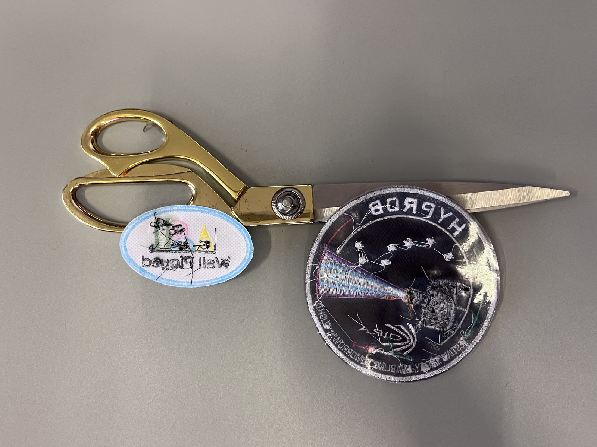

Écussons thermocollants personnalisés
« Thermocollant » ne désigne pas une technique, mais le dos de l'écusson : une couche activée par la chaleur qui permet une application à chaud sur le vêtement. Elle est disponible sur plusieurs techniques, après étude du projet et du textile.
Ce que signifie thermocollant
Un écusson thermocollant est un écusson — brodé, tissé haute définition ou sublimé — doté au dos d'une couche d'adhésif activé par la chaleur. Il s'applique à chaud, à la presse ou au fer : la chaleur active l'adhésif et fixe l'écusson au textile.
La face visible reste celle de la technique choisie. Le thermocollant ne concerne que le dos et le mode d'application : c'est une alternative à la couture et à la fixation velcro, pas une technologie distincte.
La tenue de l'application à chaud dépend du vêtement, de la température applicable et des conditions d'utilisation. C'est pourquoi le dos thermocollant est toujours proposé après une vérification technique du projet.

Quels écussons peuvent être thermocollants
Le dos activé par la chaleur peut être appliqué à ces techniques, toujours après une vérification technique du projet.
Écussons brodés
L'écusson brodé peut être réalisé avec un dos thermocollant, en alternative à la couture ou à la fixation velcro. Sur les vêtements très lavés ou les textiles techniques, la couture reste l'option la plus stable dans le temps.
Découvrir les écussons brodés →Écussons tissés HD
Fin et léger, l'écusson tissé haute définition peut lui aussi recevoir un dos thermocollant. L'association se vérifie en fonction du vêtement et de son utilisation.
Découvrir les écussons tissés →Écussons sublimés
Les écussons sublimés sont disponibles avec adhésif activé par la chaleur au dos : une association naturelle pour les petites séries et les applications rapides, toujours après vérification du textile.
Découvrir les écussons sublimés →Nous ne proposons pas actuellement de dos thermocollant sur les écussons PVC : pour cette technique, les dos habituels sont la fixation velcro et la couture.
Quand c'est utile et quand cela demande de la prudence
L'application à chaud est pratique, mais ce n'est pas la bonne réponse pour tous les projets. Ces critères aident à s'orienter.
Utile lorsque
Vous avez besoin d'une application rapide sans couture ; le vêtement est réalisé dans un textile compatible avec la chaleur ; les écussons doivent être appliqués de façon autonome sur plusieurs vêtements ; le projet ne prévoit pas de retirer souvent l'écusson.
Demande de la prudence lorsque
Le vêtement est réalisé dans un textile technique, sensible à la chaleur ou traité (déperlant, enduit) ; les lavages sont fréquents ou intensifs ; l'écusson est soumis à des sollicitations constantes. Dans ces cas, nous évaluons ensemble si le thermocollant convient ou si une autre solution est préférable.
Thermocollant, velcro ou couture ?
Le thermocollant fixe l'écusson de façon stable mais non interchangeable. La fixation velcro permet de retirer et de changer l'écusson. La couture est la solution la plus durable pour un usage intensif. Ce sont trois systèmes différents, pas trois versions d'une même chose.
Couture de sécurité
Sur certains projets, il peut être pertinent d'ajouter une couture périmétrale après l'application à chaud, pour renforcer la stabilité dans le temps. Ce n'est pas une règle : c'est une option que nous évaluons au cas par cas.
Textiles et compatibilité
L'application à chaud n'est pas compatible avec tous les textiles. La compatibilité dépend du textile, de la température applicable et des conditions d'utilisation : la vérification préalable fait partie de notre travail.
Textiles généralement adaptés
Le coton et les textiles naturels stables à la chaleur sont généralement les meilleurs candidats à une application thermocollante. La confirmation passe toujours par l'évaluation du vêtement concerné.
Textiles à vérifier
Les synthétiques, les textiles extensibles, les matières enduites ou traitées et les vêtements à membrane technique demandent une évaluation spécifique : la chaleur nécessaire à l'adhésion peut être incompatible avec la matière.
Ce que nous devons savoir
Type de vêtement, composition du textile (si elle est connue) et conditions d'utilisation prévues : avec ces informations, nous pouvons vous dire si le thermocollant est un choix pertinent pour votre projet.
Comment nous évaluons un projet thermocollant
Avant de confirmer un dos thermocollant, nous suivons ces étapes.
-
01
Analyse du projet
Nous évaluons la technique retenue pour la face visible (brodée, tissée HD ou sublimée), les dimensions et l'utilisation prévue de l'écusson.
-
02
Vérification du textile
Nous vérifions la compatibilité du vêtement avec une application à chaud. Si le textile ne s'y prête pas, nous proposons une alternative : couture ou fixation velcro.
-
03
Confirmation de la solution
Nous confirmons le système d'application le plus adapté et, lorsque cela a du sens, envisageons l'ajout d'une couture de sécurité.
-
04
Production et conseils d'application
Nous produisons les écussons avec le dos convenu et transmettons les recommandations pour une application correcte.
Réponses aux questions les plus courantes
Les questions que l'on nous pose le plus souvent sur le dos thermocollant. Si la vôtre n'y figure pas, écrivez-nous directement.
-
Un écusson thermocollant peut-il s'appliquer sur tous les textiles ?
Non. La tenue dépend du textile, de la température applicable et des conditions d'utilisation. Les textiles techniques, sensibles à la chaleur ou traités demandent une évaluation spécifique ; dans certains cas, la couture ou la fixation velcro sont des solutions plus adaptées.
-
L'application à chaud est-elle définitive ?
L'application à chaud est conçue comme une fixation stable, mais sa durabilité dépend du vêtement et de son usage. Pour les projets soumis à des lavages fréquents ou à des sollicitations constantes, une couture de sécurité peut avoir du sens : nous l'évaluons au cas par cas, ce n'est pas une règle universelle.
-
Les écussons thermocollants résistent-ils au lavage ?
La tenue au lavage dépend du textile, de la qualité de l'application et des conditions de lavage. Avant de confirmer un usage avec lavages fréquents ou industriels, nous évaluons le projet : nous ne promettons pas de résultats que nous ne pouvons pas vérifier.
-
Thermocollant ou velcro : que choisir ?
Cela dépend de l'usage. Le thermocollant fixe l'écusson au vêtement ; la fixation velcro le rend amovible et interchangeable. Si l'écusson doit changer souvent, le velcro est le choix naturel ; s'il doit rester en place, le thermocollant ou la couture.
Parlez-nous de votre projet
Indiquez-nous la technique envisagée, le type de vêtement et l'utilisation prévue : nous vous dirons si le dos thermocollant convient ou si un autre système d'application est préférable.
Demander un devis